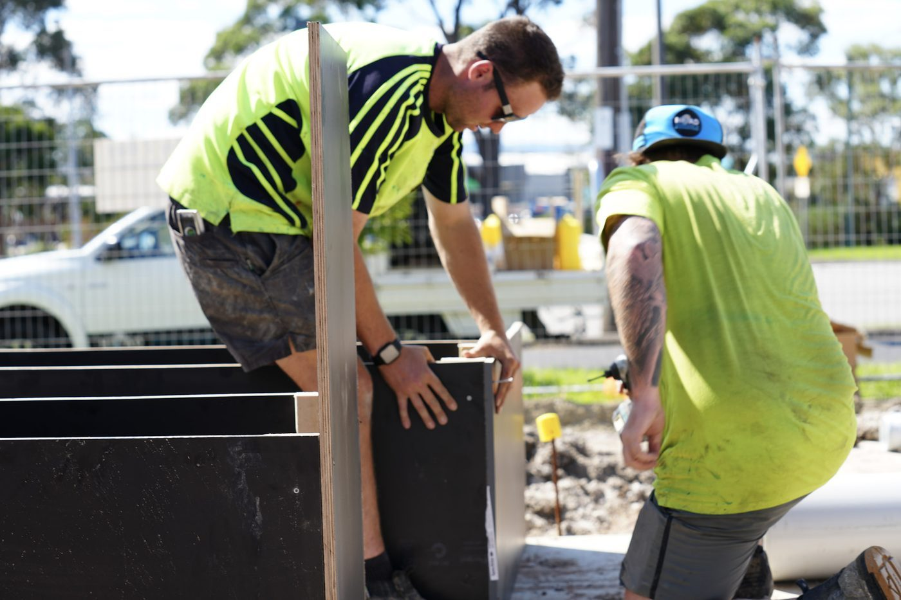

What we do
Baxter blockages, cleared properly
High-pressure water jetting cuts through the grease, roots and debris that a plunger or a snake won't shift, and scours the pipe wall clean instead of just punching a hole through the blockage. Then we camera the line to confirm it's clear and show you what caused it. Baxter's larger, semi-rural blocks often carry long drain runs, so jetting is the quick way to scour the whole line out. It's the same blocked drain and jetting service we run right across the Peninsula, here in Baxter.
- High-pressure water jetting
- Tree-root cutting and grease removal
- Sewer, stormwater and sink drains
- Camera check after clearing
- Same-day service where possible